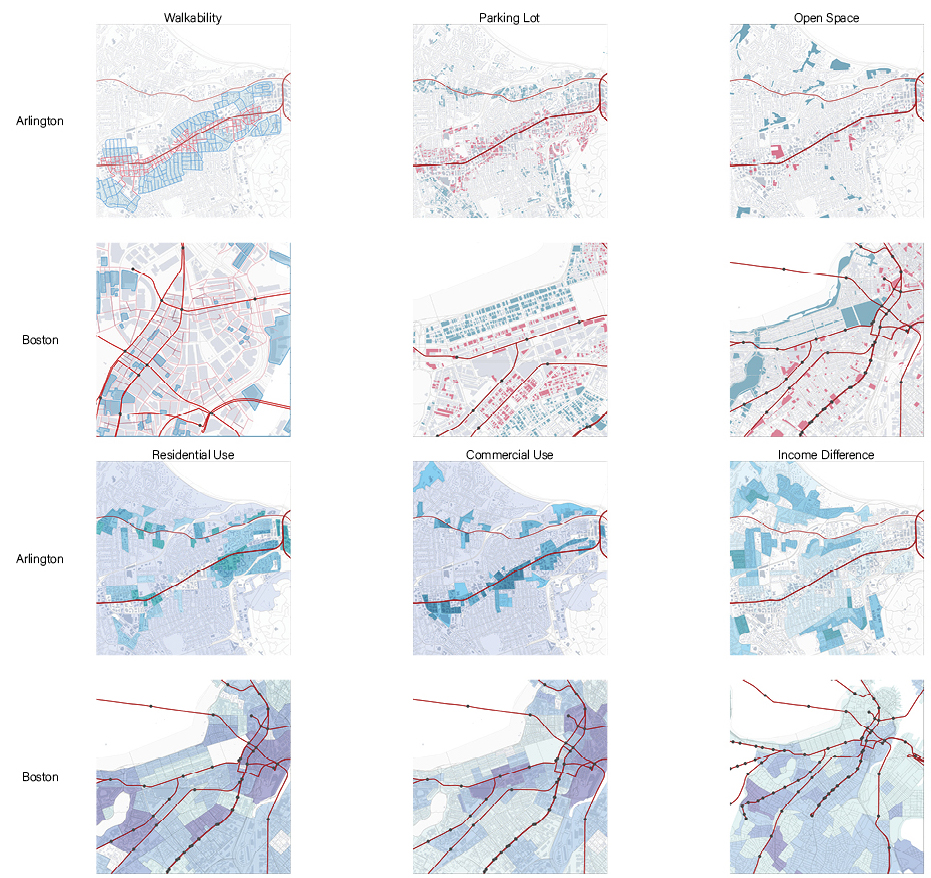
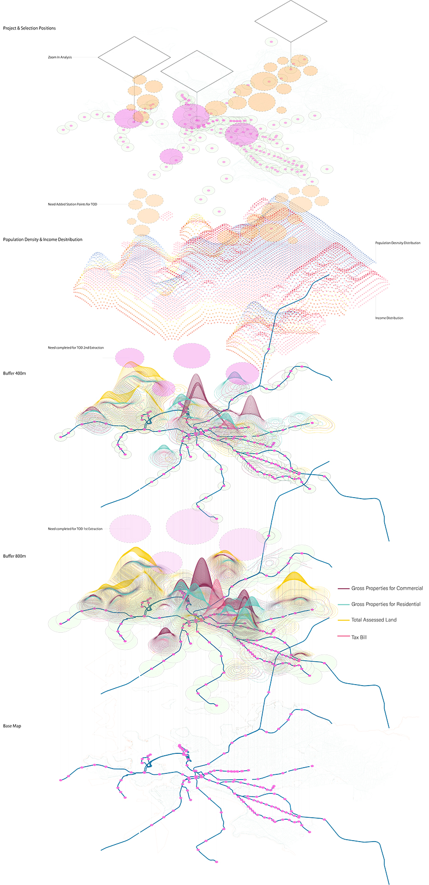

Study On The Development Of TOD
Modify date: 2021-01-03

Basic Info
| Category | Research and analysis workshop with GIS |
| Location | Boston, MA & Arlington, WA |
| Date of design | Aug 2019 |
| Tutor | Mark Hiller |
| Collaborator | Yanwei Yang, Jinqi Gu |
Intented for studying what makes the development around a station transit-oriented, and how such development shapes some part of Boston, the project is part of the GIS workshop. It’s consist of two parts, both through comparison and data visualization:
- Overall status quo of TOD in Boston;
- Key elements of TOD when zoom in to neighborhood scale.
Part I
Status Quo Of TOD In Boston (Visualization, Comparison Between Boston & Arlington)
- Firstly, the project starts with several key elements relevant to the urban pattern and form around TOD metro stations - walkability, parking lots, open space, gross in residential or commercial use, and income difference by distance to metro lines. As a successful city with TOD, Arlington, WA was here used as a comparison to Boston to find out the transit-oriented-developed areas and those with potential for TOD.

- Secondly, the economic data was overlapped on the base map of metro lines and stations for Boston. Based on previous comparison, stations with higher gross properties for commercial or lower tax bill around tend to gain better transit-oriented development. The scope is zoomed in round by round to several stations after the extraction.

Part II
Key Elements Around TOD Stations (Visualization, Comparison Between TOD & Non-TOD)
A TOD station and a non-TOD station is selected from the previous extraction. Under the neighborhood scale, building typologies, activity category, range and timeline for various groups of people are compared in this part to find out the key elements that shape a station with transit-oriented development.